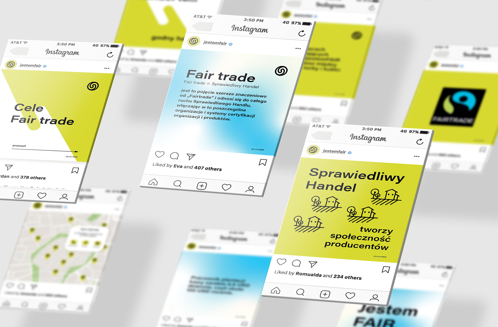

Marketing
Projekt: „Wołczyn - niczego mi nie braknie”. To niezależny cykl spotkań powstały aby promować katolicki festiwal młodych odbywający się w Wołczynie. Nazwa projektu pochodzi z Psalmu 23 i odpowiada na największą potrzebę młodego człowieka jakim jest… BRAK.
Brak relacji, brak miłości, brak Boga. Spotkania Młodych będą odpowiedzią
na poszczególne braki poruszane podczas całego roku. Hasło odpowiada też na brak odczuwany po wakacyjnym festiwalu i daje nadzieję, że to czego się tam doświadczyło nie pryśnie wraz z powrotem do domu.
Niczego mi nie braknie – Wołczyna
przez cały rok również.

- 